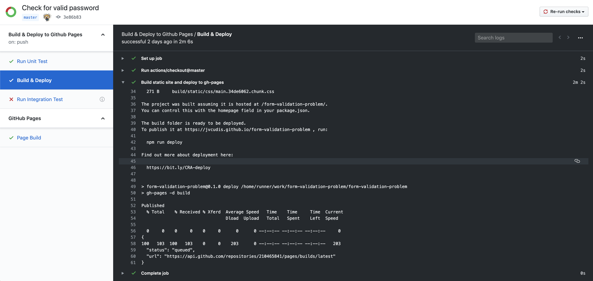

Triggering Github Pages Build using Github Actions
Recently, I’ve been playing with Github Actions and the first thing that I’ve thought of doing is how I can use Github Actions aka Steve (let’s name it Steve because Github Actions is just too unfriendly! ) to deploy my statically-generated site to Github Pages. The current deployment workflow involves TravisCI handling the generation of static files and deploying them to the gh-pages branch using a built-in configuration.
The new planned workflow is pretty straightforward.
|
|
Read more about LINE 16 and LINE 34.
But, here’s the catch! When Steve pushed changes to the gh-pages branch, it did not trigger a page build at all. (-_-)ゞ゛
There is an error in the Github Pages settings page saying that the Page build failed. Honestly, it bugged me to death on why this is happening! I ran the deploy script locally just to see if the issue can be replicated but it works on my machine. But whenever I push the generated static content using the terminal, the error is gone! So it’s definitely not an issue with the deploy script. ( „ɪ‚óá„ɪ)Ôºü
I got frustrated and so I switched the Github Pages source from gh-pages to master and, lo and behold, it triggered a Github Pages workflow even though it was not set up and that seemed to remove the page build error. Around this time, I did not know that when you enable GitHub Actions, GitHub installs a GitHub App on your repository. That is the reason behind having a Github Pages workflow running whenever a page build is triggered.
It got me thinking… Œ£(Ôø£„ÄÇÔø£Ôæâ)
Maybe you need to explicitly trigger a page build!
|
|
So I added an API call to trigger a page build but it resulted in a message saying Resource not accessible by integration.

Now we are getting somewhere. The default GITHUB_TOKEN provided by Steve has definitely some permission limitations. Now, what do I do to have the correct permissions? It got me into reading the different authentication methods which resulted in me thinking that perhaps Steve (it being some sort of CI) has a server-to-server requests access but what we really want is user-to-server requests which means that we need to generate an ACCESS_TOKEN.
|
|
It did solve the problem. As you can see, in the screenshot below, the Github Pages workflow has been triggered and there were no errors in the settings page.

But it still does not solve the root problem of why pushing changes from my local machine works and not when Steve does it. I did a bit of googling and discovered that GitHub Actions created by other people use the ACCESS_TOKEN when doing a git push.
|
|
And it worked! Now, there is no need to trigger a page build using the Github API as long as you use the ACCESS_TOKEN in pushing changes.
Problem solved. Root cause identified. Now, on to more problem-solving! ＼(~o~)／